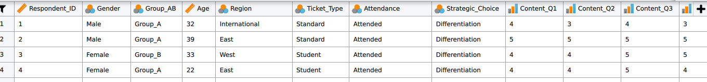

Software Guide
Every analysis in this book can be run two ways, and you may choose either. Both routes are free, and one of them runs in a browser tab, so the module works on whatever machine you already have.
JASP is the main statistical package. It is free and open source, and it gives a clean menu-driven path to descriptive statistics, normality checks, t-tests, chi-square tests, correlation, regression, and factor analysis. Install it once and it runs offline.
PocketStat is the browser route. It runs entirely inside your own browser, so there is no installation, no licence, no account, and your data stays on your own machine. It works on a phone or a borrowed computer, and it keeps working offline once the page has loaded. Use it if installing JASP is inconvenient or impossible, or if you prefer it.
Both routes reach the same answer, and either is acceptable in any submission. State which one you used.
Google Sheets is used for decision trees, PERT, CPM, Gantt charts, and simple probability exercises. Excel is used for data application and preparation work in Chapter 12. R is provided as a reproducible companion for students who want to check the calculations or build stronger research skills.
Which route covers which chapter
PocketStat implements thirteen techniques in total. It carries the analysis for most chapters of this module, and the two exceptions are stated here so you can plan around them in advance.
| Chapters | JASP | PocketStat |
|---|---|---|
| 1, 2, 4, 5, 9, 10, 11 | Yes | Yes, full analysis |
| 12, 13 | Yes | Yes, reliability, correlation matrix and exploratory factor analysis |
| 3, 6, 7, 8 | Yes | Not needed, these chapters use spreadsheets and decision tools |
| 14, 15 | Yes | No, use JASP. PocketStat covers exploratory factor analysis and stops there |
For Chapters 14 and 15 use JASP. This is a limit of the tool, not a change in what is expected of you.
Correcting JASP measurement levels after import
CSV import may treat many variables as scale. Correct the measurement icons before running any test.
The table below gives the correct setting for each variable type.
| Variable type | JASP icon | PocketStat label | Examples in this module | Purpose |
|---|---|---|---|---|
| Nominal | Three coloured circles | Nominal | Gender, Group_AB, Ticket_Type, Attendance | Frequencies and group comparisons |
| Ordinal | Ordered bars | Ordinal | Return_Intention, Content_Q1 to Network_Q4 | Ordered responses and Spearman correlation |
| Scale | Ruler | Continuous | Age, Satisfaction, Spending, Waiting_Time_Mins | Means, t-tests, ANOVA, Pearson correlation, regression |
PocketStat infers the type when the file loads and shows it beside each variable name. Check it the same way you would in JASP: an ordinal rating read as continuous will let you run a test that does not suit the data.
